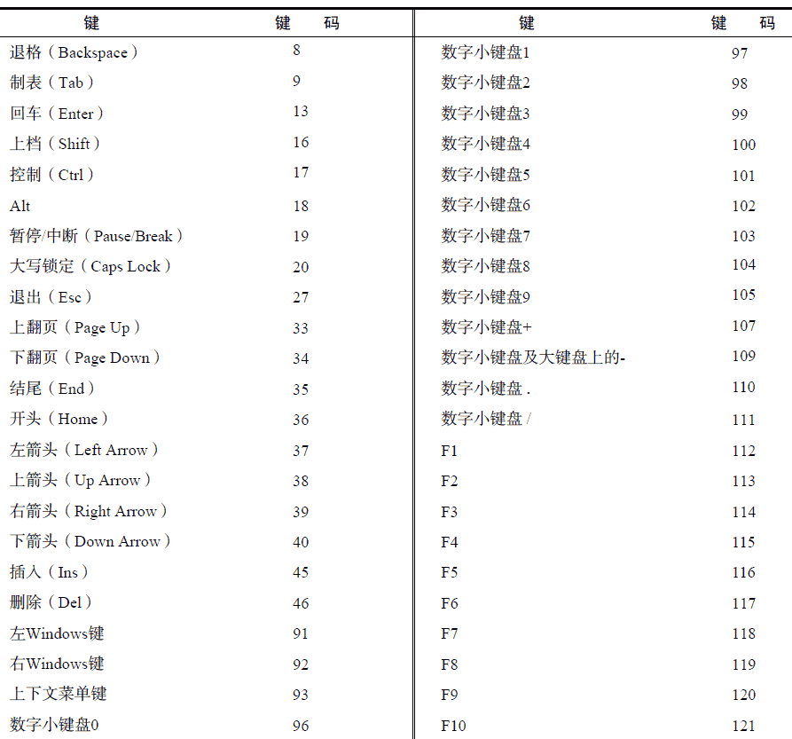
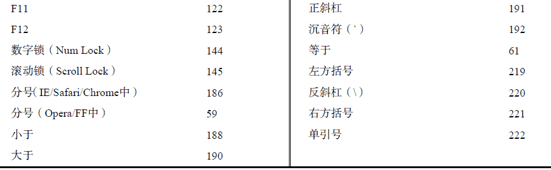
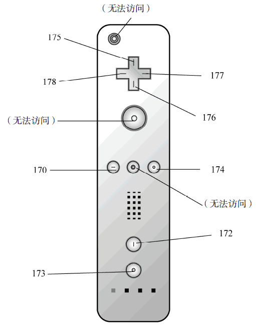

13.4.4 键盘与文本事件
用户在使用键盘时会触发键盘事件。“DOM2 级事件”最初规定了键盘事件，但在最终定稿之前又删除了相应的内容。结果，对键盘事件的支持主要遵循的是DOM0 级。
“DOM3 级事件”为键盘事件制定了规范，IE9 率先完全实现了该规范。其他浏览器也在着手实现这一标准，但仍然有很多遗留的问题。
有3 个键盘事件，简述如下。
-
keydown：当用户按下键盘上的任意键时触发，而且如果按住不放的话，会重复触发此事件。
-
keypress：当用户按下键盘上的字符键时触发，而且如果按住不放的话，会重复触发此事件。
按下Esc 键也会触发这个事件。Safari 3.1 之前的版本也会在用户按下非字符键时触发keypress事件。
虽然所有元素都支持以上3 个事件，但只有在用户通过文本框输入文本时才最常用到。只有一个文本事件：textInput。这个事件是对keypress 的补充，用意是在将文本显示给用户之前更容易拦截文本。在文本插入文本框之前会触发textInput 事件。
在用户按了一下键盘上的字符键时，首先会触发keydown 事件，然后紧跟着是keypress 事件，最后会触发keyup 事件。其中，keydown 和keypress 都是在文本框发生变化之前被触发的；而keyup事件则是在文本框已经发生变化之后被触发的。如果用户按下了一个字符键不放，就会重复触发keydown 和keypress 事件，直到用户松开该键为止。
如果用户按下的是一个非字符键，那么首先会触发keydown 事件，然后就是keyup 事件。如果按住这个非字符键不放，那么就会一直重复触发keydown 事件，直到用户松开这个键，此时会触发keyup事件。
键盘事件与鼠标事件一样，都支持相同的修改键。而且，键盘事件的事件对象中也有shiftKey、ctrlKey、altKey 和metaKey 属性。IE 不支持metaKey。
1. 键码
在发生keydown 和keyup 事件时，event 对象的keyCode 属性中会包含一个代码，与键盘上一个特定的键对应。对数字字母字符键，keyCode 属性的值与ASCII 码中对应小写字母或数字的编码相同。因此，数字键7 的keyCode 值为55，而字母A 键的keyCode 值为65——与Shift 键的状态无关。
DOM 和IE 的event 对象都支持keyCode 属性。请看下面这个例子：
var textbox = document.getElementById("myText");
EventUtil.addHandler(textbox, "keyup",
function(event) {
event = EventUtil.getEvent(event);
alert(event.keyCode);
});
运行一下
在这个例子中，用户每次在文本框中按键触发keyup 事件时，都会显示keyCode 的值。下表列出了所有非字符键的键码。


无论keydown 或keyup 事件都会存在的一些特殊情况。在Firefox 和Opera 中，按分号键时keyCode值为59，也就是ASCII 中分号的编码；但IE 和Safari 返回186，即键盘中按键的键码。
2. 字符编码
发生keypress 事件意味着按下的键会影响到屏幕中文本的显示。在所有浏览器中，按下能够插入或删除字符的键都会触发keypress 事件；按下其他键能否触发此事件因浏览器而异。由于截止到2008年，尚无浏览器实现“DOM3 级事件”规范，所以浏览器之间的键盘事件并没有多大的差异。
IE9、Firefox、Chrome 和Safari 的event 对象都支持一个charCode 属性，这个属性只有在发生keypress 事件时才包含值，而且这个值是按下的那个键所代表字符的ASCII 编码。此时的keyCode通常等于0 或者也可能等于所按键的键码。IE8 及之前版本和Opera 则是在keyCode 中保存字符的ASCII编码。要想以跨浏览器的方式取得字符编码，必须首先检测charCode 属性是否可用，如果不可用则使用keyCode，如下面的例子所示。
var EventUtil = {
//省略的代码
getCharCode: function(event) {
if (typeof event.charCode == "number") {
return event.charCode;
} else {
return event.keyCode;
}
},
//省略的代码
};
这个方法首先检测charCode 属性是否包含数值（在不支持这个属性的浏览器中，值为undefined），如果是，则返回该值。否则，就返回keyCode 属性值。下面是使用这个方法的示例。
var textbox = document.getElementById("myText");
EventUtil.addHandler(textbox, "keypress",
function(event) {
event = EventUtil.getEvent(event);
alert(EventUtil.getCharCode(event));
});
运行一下
在取得了字符编码之后，就可以使用String.fromCharCode()将其转换成实际的字符。
3. DOM3 级变化
尽管所有浏览器都实现了某种形式的键盘事件，DOM3 级事件还是做出了一些改变。比如，DOM3级事件中的键盘事件，不再包含charCode 属性，而是包含两个新属性：key 和char。
其中，key 属性是为了取代keyCode 而新增的，它的值是一个字符串。在按下某个字符键时，key的值就是相应的文本字符（如“k”或“M”）；在按下非字符键时， key 的值是相应键的名（如“Shift”或“Down”）。而char 属性在按下字符键时的行为与key 相同，但在按下非字符键时值为null。
IE9 支持key 属性，但不支持char 属性。Safari 5 和Chrome 支持名为keyIdentifier 的属性，在按下非字符键（例如Shift）的情况下与key 的值相同。对于字符键，keyIdentifier 返回一个格式类似“U+0000”的字符串，表示Unicode 值。
var textbox = document.getElementById("myText");
EventUtil.addHandler(textbox, "keypress",
function(event) {
event = EventUtil.getEvent(event);
var identifier = event.key || event.keyIdentifier;
if (identifier) {
alert(identifi er);
}
});
运行一下
由于存在跨浏览器问题，因此本书不推荐使用key、keyIdentifier 或char。
DOM3 级事件还添加了一个名为location 的属性，这是一个数值，表示按下了什么位置上的键：
0 表示默认键盘，1 表示左侧位置（例如左位的Alt 键），2 表示右侧位置（例如右侧的Shift 键），3 表示数字小键盘，4 表示移动设备键盘（也就是虚拟键盘），5 表示手柄（如任天堂Wii 控制器）。IE9 支持这个属性。Safari 和Chrome 支持名为keyLocation 的等价属性，但即有bug——值始终是0，除非按下了数字键盘（此时，值 为3）；否则，不会是1、2、4、5。
var textbox = document.getElementById("myText");
EventUtil.addHandler(textbox, "keypress",
function(event) {
event = EventUtil.getEvent(event);
var loc = event.location || event.keyLocation;
if (loc) {
alert(loc);
}
});
运行一下
与key 属性一样，支持location 的浏览器也不多，所以在跨浏览器开发中不推荐使用。
最后是给event 对象添加了getModifierState()方法。这个方法接收一个参数，即等于Shift、Control、AltGraph 或Meta 的字符串，表示要检测的修改键。如果指定的修改键是活动的（也就是处于被按下的状态），这个方法返回true，否则返回false。
var textbox = document.getElementById("myText");
EventUtil.addHandler(textbox, "keypress",
function(event) {
event = EventUtil.getEvent(event);
if (event.getModifierState) {
alert(event.getModifierState("Shift"));
}
});
运行一下
实际上，通过event 对象的shiftKey、altKey、ctrlKey 和metaKey 属性已经可以取得类似的属性了。IE9 是唯一支持getModifierState()方法的浏览器。
4. textInput 事件
“DOM3 级事件”规范中引入了一个新事件，名叫textInput。根据规范，当用户在可编辑区域中输入字符时，就会触发这个事件。这个用于替代keypress 的textInput 事件的行为稍有不同。区别之一就是任何可以获得焦点的元素都可以触发keypress 事件，但只有可编辑区域才能触发textInput事件。区别之二是textInput 事件只会在用户按下能够输入实际字符的键时才会被触发，而keypress事件则在按下那些能够影响文本显示的键时也会触发（例如退格键）。
由于textInput 事件主要考虑的是字符，因此它的event 对象中还包含一个data 属性，这个属性的值就是用户输入的字符（而非字符编码）。换句话说，用户在没有按上档键的情况下按下了S 键，data 的值就是"s"，而如果在按住上档键时按下该键，data 的值就是"S"。
以下是一个使用textInput 事件的例子：
var textbox = document.getElementById("myText");
EventUtil.addHandler(textbox, "textInput",
function(event) {
event = EventUtil.getEvent(event);
alert(event.data);
});
运行一下
在这个例子中，插入到文本框中的字符会通过一个警告框显示出来。另外，event 对象上还有一个属性，叫inputMethod，表示把文本输入到文本框中的方式。
-
0，表示浏览器不确定是怎么输入的。
-
1，表示是使用键盘输入的。
-
2，表示文本是粘贴进来的。
-
3，表示文本是拖放进来的。
-
4，表示文本是使用IME 输入的。
-
5，表示文本是通过在表单中选择某一项输入的。
-
6，表示文本是通过手写输入的（比如使用手写笔）。
-
7，表示文本是通过语音输入的。
-
8，表示文本是通过几种方法组合输入的。
-
9，表示文本是通过脚本输入的。
使用这个属性可以确定文本是如何输入到控件中的，从而可以验证其有效性。支持textInput 属性的浏览器有IE9+、Safari 和Chrome。只有IE 支持inputMethod 属性。
5. 设备中的键盘事件
任天堂Wii 会在用户按下Wii 遥控器上的按键时触发键盘事件。尽管没有办法访问Wii 遥控器中的所有按键，但还是有一些键可以触发键盘事件。图13-6 展示了一些键的键码，通过这些键码可以知道用户按下了哪个键。

当用户按下十字键盘（键码为175～178）、减号（170）、加号（174）、1（172）或2（173）键时就会触发键盘事件。但没有办法得知用户是否按下了电源开关、A、B 或主页键。
iOS 版Safari 和Android 版WebKit 在使用屏幕键盘时会触发键盘事件。